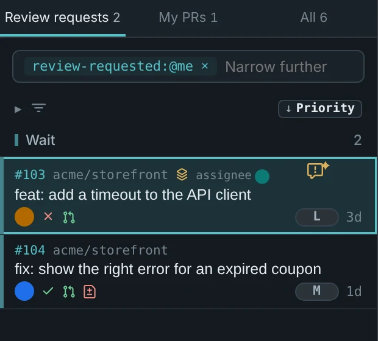
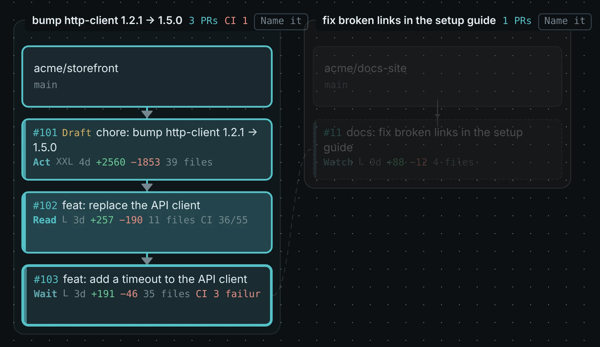
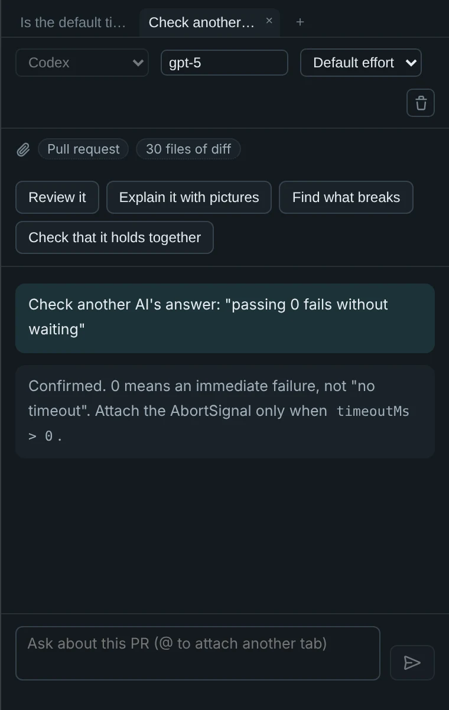

Your first review
From picking a PR to sending the review. Each step stands on its own, so skip what you don't need.
Pick a PR
The list on the left has three tabs: Review requests, My PRs and All.
Sort by priority and the list splits into Read (your review is wanted), Act (your move), Wait (on someone else) and Watch (nothing needed). Start at the top.

See where it sits in the stack
Press ⌘G to open the graph. Each stack of PRs is boxed. Hover a PR to see why it got its priority.
Click a PR to light up its chain, then Open #n to read it.

Read the diff
Tick Viewed on each file as you finish it. If the author changes that file later, Lythe clears the mark and tells you.
For a large PR, switch to Semantic diff to read by function and type, or press Reorder with AI to read in the order an AI CLI suggests. Semantic diff parses TypeScript, Rust, Go, CSS and config files without AI.

Ask an AI
The Chat pane on the right sends the PR, the diff and your comments to the CLI you pick. Start from a template such as Review it or Find what breaks. The CLI sends it to its AI service under your account.
Want a second opinion? Open another tab with a different CLI and hand it the first answer.

Comment and submit
Click the mark at the start of a line to write a comment. Comments stay as drafts until you send them.
Submit review sends them to GitHub in one go. Approve and merge from the same screen.
Let it review in the background
Turn on Auto review in Settings › Agents and prompts. While Lythe is open, PRs you are asked to review get reviewed in priority order. Each PR runs the CLI many times and uses your quota.
Results appear in the Auto review tab of Chat with a verdict. Nothing is posted to GitHub until you send it.

Teach it what you look for
Lythe keeps your review comments and Chat instructions on this Mac. Once there are 50, press Distil again in Settings › Angles and your AI CLI distils them into angles.
Angles you have not switched off go with every Chat question, so the AI checks what you usually check.
Keys worth knowing
| ⌘P | Go to a PR or file |
| ⌘⇧P | Find an action |
| ⌘G | Open or close the graph |
| ⌘F | Search inside the pane you last clicked |
| ⌃Tab | Switch PRs |
| ⌥Tab | Switch Chat tabs |
| ⌘ , | Settings |